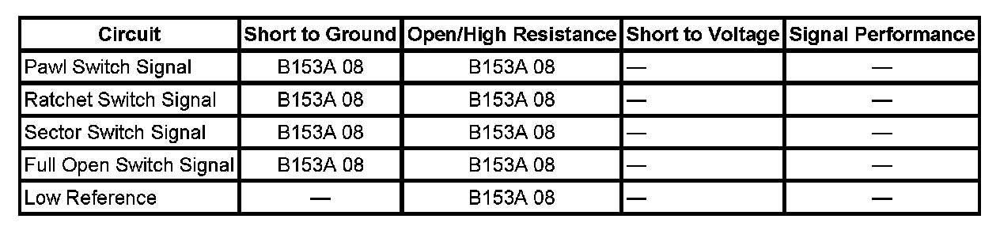

B153A
DTC B153A
DIAGNOSTIC INSTRUCTIONS
- Perform the Diagnostic System Check - Vehicle prior to using this diagnostic procedure. Initial Inspection and Diagnostic Overview
- Review Strategy Based Diagnosis for an overview of the diagnostic approach.
- Diagnostic Procedure Instructions provides an overview of each diagnostic category.
DTC DESCRIPTOR
DTC B153A 08
Liftgate Latch Switch Signal Circuit Signal Invalid

DIAGNOSTIC FAULT INFORMATION
CIRCUIT/SYSTEM DESCRIPTION
The ratchet, pawl, and sector switches are part of the latch motor assembly and are used by the liftgate control module to determine the state of the latch during the process of latching or unlatching. The ratchet and pawl switches will be inactive when the primary and secondary latches are latched, and the sector switch will be active during the power cinch function. Each of the latch switch signal circuits are supplied battery voltage through a resistor and monitored within the liftgate control module. The latch switches share a common low reference circuit from the liftgate control module and when the switch contacts close the signal circuit goes low and the liftgate control module determines the switch to be active. The full open switch is a limit switch mounted on the gear motor assembly alongside the swing arm gear. The full open switch signal circuit is supplied battery voltage through a resistor and monitored within the liftgate control module. When the liftgate reaches the full open position, the switch signal circuit is closed to the low reference circuit and the signal circuit voltage goes low.
CONDITIONS FOR RUNNING THE DTC
System voltage to the liftgate control module must be 9-16 volts.
CONDITIONS FOR SETTING THE DTC
Any incorrect combination of the following switch inputs:
- Ratchet switch
- Pawl switch
- Sector switch
- Full open switch
ACTION TAKEN WHEN THE DTC SETS
- Power open will be disabled.
- The latch may be inoperative or not function normally.
CONDITIONS FOR CLEARING THE DTC
- The DTC will be current for as long as the fault is present.
- When the fault is no longer present, the DTC will be a history status code.
DIAGNOSTIC AIDS
When the pawl switch signal remains inactive during a power open cycle, DTC B153E 08 may also set.
CIRCUIT/SYSTEM VERIFICATION
1. Install a scan tool and display the liftgate module data list.
2. Ignition ON, and liftgate closed, verify that the Pawl Sw., Ratchet Sw., and Sector Sw. parameters are Inactive.
- If any of the switch parameters are displayed as Active, perform the Liftgate Latch Switch Circuit Test.
3. Verify that the Full Open Sw. parameter is Inactive.
- If the Full Open Sw. parameter is displayed as Active, perform the Full Open Switch Circuit Test.
4. Open the liftgate and verify that the Pawl Sw., and Ratchet Sw. parameters are Active.
- If either of the switch parameters are displayed as Inactive, perform the Liftgate Latch Switch Circuit Test.
5. Verify that the Sector Sw. parameter is Inactive.
- If the Sector Sw. parameter is displayed as Active, perform the Liftgate Latch Switch Circuit Test.
6. Verify that the Full Open Sw. parameter is Active.
- If the Full Open Sw. parameter is displayed as Inactive, perform the Full Open Switch Circuit Test.
CIRCUIT/SYSTEM TESTING
Liftgate Latch Switch Circuit Test
1. Disconnect the liftgate latch connector.
2. Using a DMM, verify that continuity to ground is present at the low reference circuit terminal 2 in the latch harness connector.
- If the low reference circuit has high resistance to or no continuity to ground, Test the circuit for an open/high resistance. If the circuit tests normal, replace the liftgate control module.
3. Ignition ON, verify that the Pawl Sw., Ratchet Sw., and Sector Sw. scan tool parameters are Inactive.
- If any of the switch parameters are displayed as Active, test the affected switch signal circuit for a short to ground. If the signal circuit tests normal, replace the liftgate control module.
4. Connect a fused jumper wire from the low reference circuit terminal 2 to the sector switch signal terminal 4 and verify that the sector switch scan tool parameter displays Active.
- If the scan tool displays Inactive, test the sector switch signal circuit for an open/high resistance. If the circuit tests normal replace the liftgate control module.
5. Connect a fused jumper wire from the low reference circuit terminal 2 to the pawl switch signal terminal 5 and verify that the pawl switch scan tool parameter displays Active.
- If the scan tool displays Inactive, test the pawl switch signal circuit for an open/high resistance. If the circuit tests normal replace the liftgate control module.
6. Connect a fused jumper wire from the low reference circuit terminal 2 to the ratchet switch signal terminal 6 and verify that the ratchet switch scan tool parameter displays Active.
- If the scan tool displays Inactive, test the ratchet switch signal circuit for an open/high resistance. If the circuit tests normal replace the liftgate control module.
7. If all the circuits test normal, replace the liftgate latch assembly.
Full Open Switch Circuit Test
1. Ignition ON, open the liftgate to the full open position and verify that the Full Open switch parameter is Active.
- If the switch parameter is displayed as Inactive, test the full open switch signal circuit for an open/high resistance. If the circuit tests normal, replace the liftgate control module.
2. Disconnect the full open switch connector and verify that the Full Open switch parameter is Inactive.
- If the switch parameter is displayed as Active, test the full open switch signal circuit for a short to ground. If the circuit tests normal, replace the liftgate control module.
3. If the circuits test normal, replace the full open switch.
REPAIR INSTRUCTIONS
Perform the Diagnostic Repair Verification after completing the diagnostic procedure.
- Liftgate Actuator Switch Replacement
- Control Module References for liftgate control module replacement, programming and setup. Verification Tests Programming and Relearning